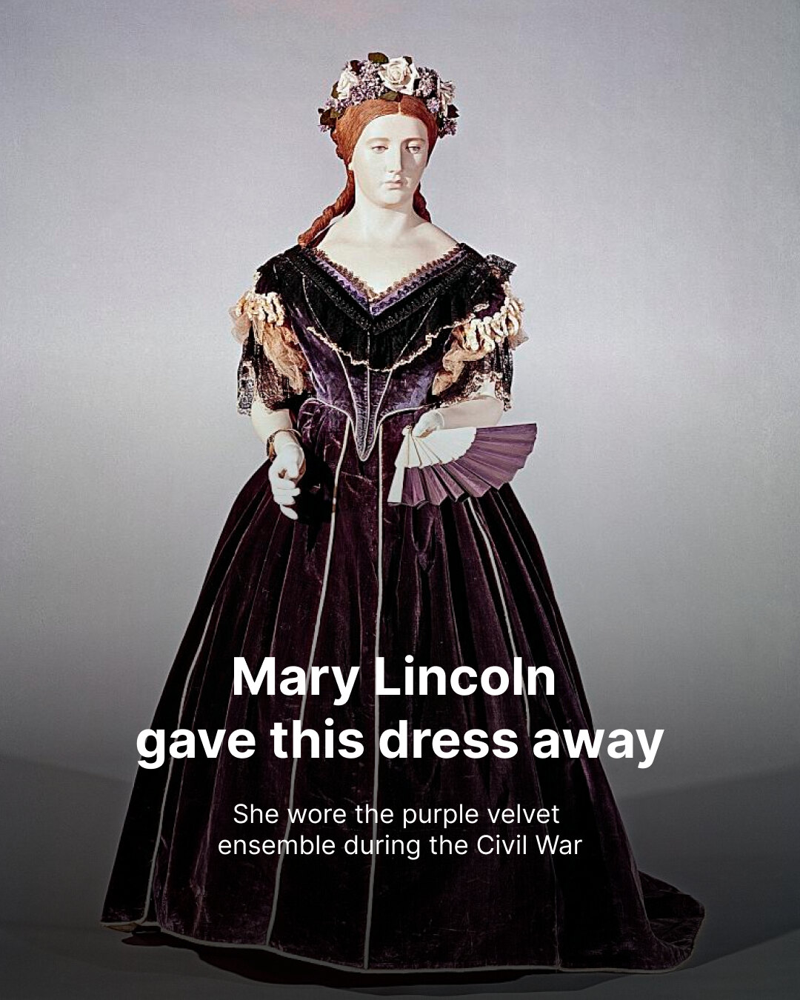

Back to Instagram
From the Vizbl Instagram
Newest post first
Bring history home
Tap any post to try the piece in your home, or on yourself.
Have an online store? Add this try-on to it.
Shoppers see how your product looks in their home before they buy.
Start free

Try on this dress
Try this carpet
Next story soon